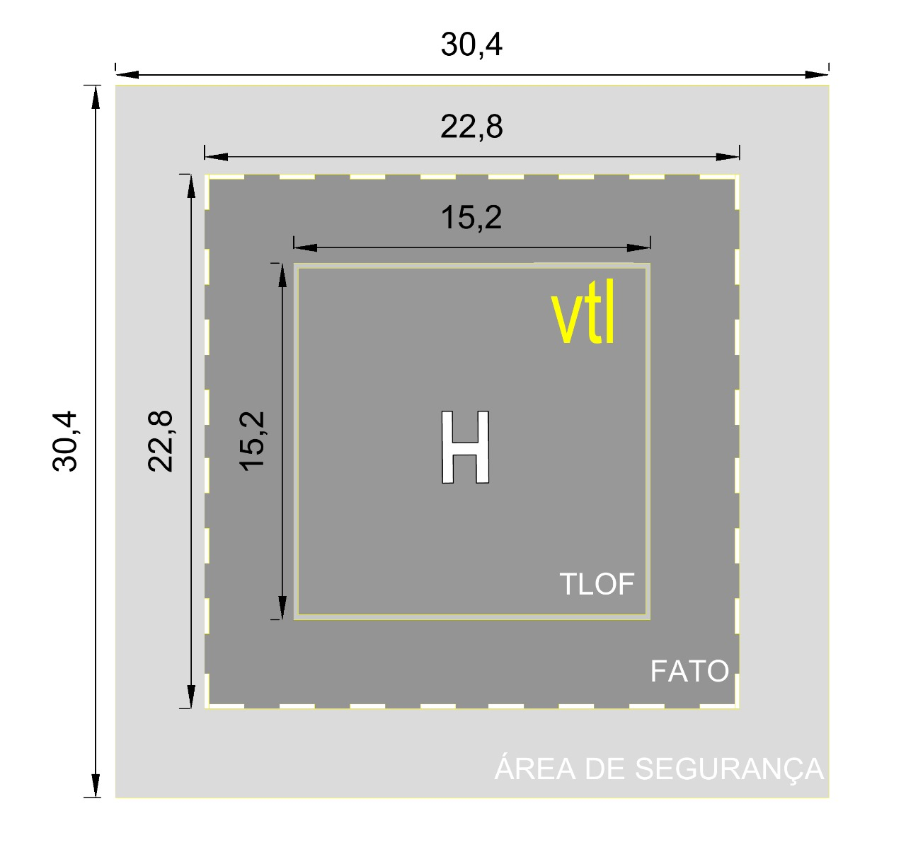
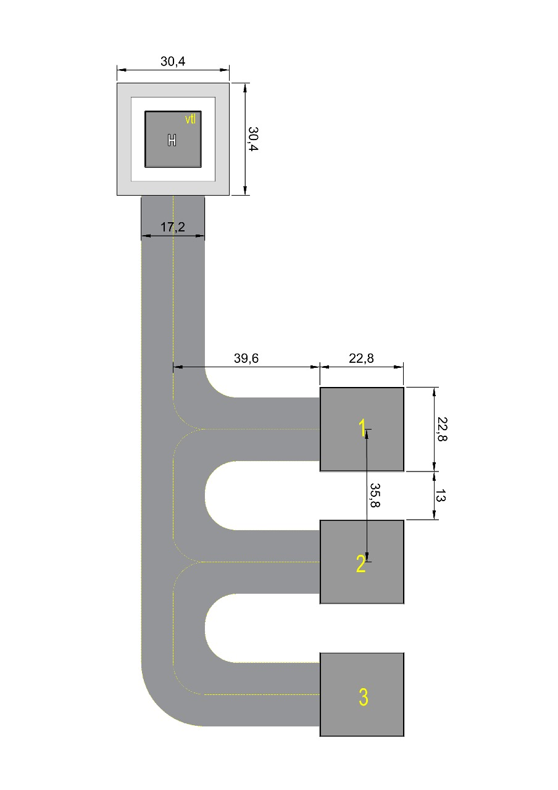
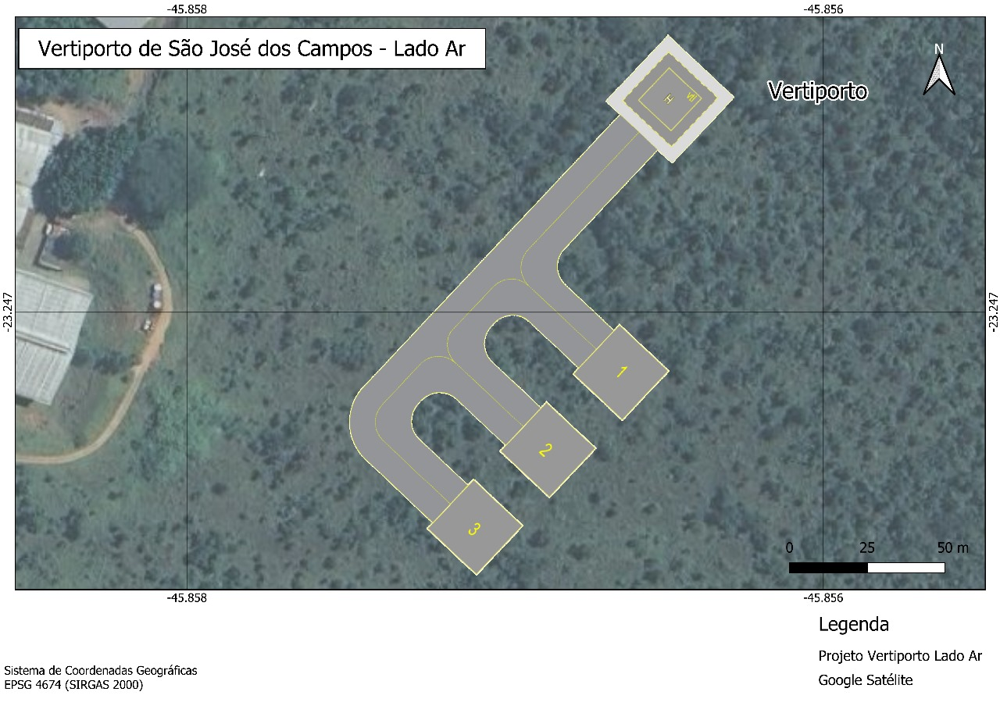
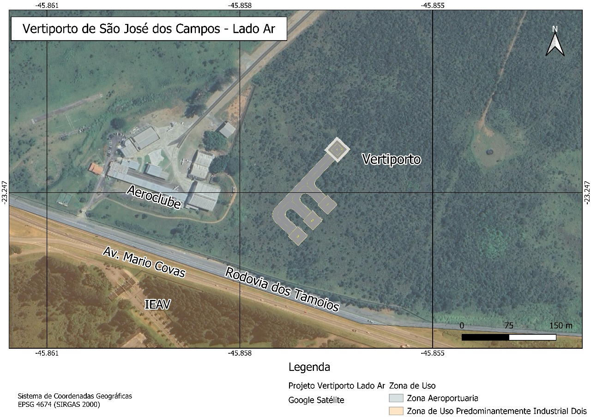
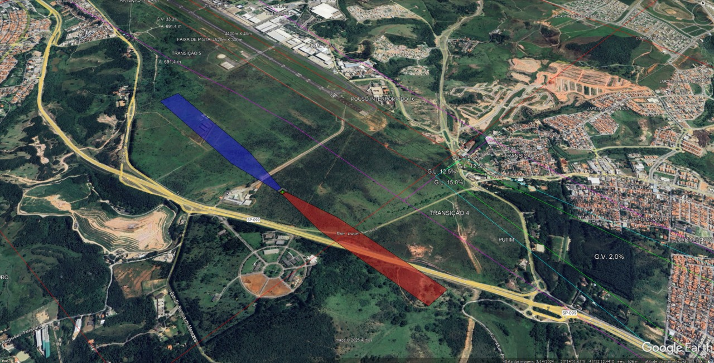
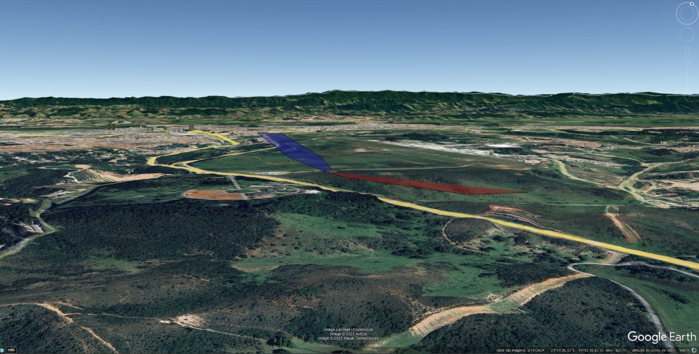

Projeto Conceitual de Vertiporto
Com o sítio definido no Aeroporto Internacional de São José dos Campos (SP), é iniciado o projeto da parte ar do vertiporto, utilizando as legislações de referência, um veículo eVTOL de referência e os cálculos necessários:
Legislações de Referência
Projeto do vertiporto
O dimensionamento foi baseado no eVTOL Eve, que possui dimensão D = 15,2 m, que corresponde ao menor círculo que envolve a projeção da aeronave em planta horizontal. A estrutura principal do vertiporto contempla:
-
TLOF: Uma única área de pouso e decolagem, quadrada, com 15,2 m × 15,2 m, dimensionada com 1 × D, em conformidade com plataformas elevadas
-
FATO: Área que envolve a TLOF, também quadrada, com 22,8 m × 22,8 m, equivalente a 1,5 × D
-
Área de Segurança: Zona livre de obstáculos ao redor da FATO, com 30,4 m × 30,4 m (2 × D)
-
Orientação da FATO/TLOF/AS: Definida em 135°, conforme análise e necessidades do sítio
-
Altitude e Localização: O vertiporto encontra-se a 630 m de altitude, com centro geográfico em -23.246330, 45.8564847
-
Pista de taxiamento: Equivalente a D + 2 m, portanto, 17,2 m
O desenho esquemático da TLOF, FATO e Área de Segurança é mostrado a seguir.
Figura 1 - Representação das dimensões da TLOF, FATO e Área de Segurança

(Fonte: Autor)
Após definir a TLOF, FATO e Área de segurança, o esquema da parte ar completa é definido, considerando três stans para estacionamento, taxiamento e operação das aeronaves.
Figura 2 - Planta detalhada do lado ar do vertiporto, com indicação das pistas de taxiamento e posições de stands

(Fonte: Autor)
Figura 3 - Planta esquemática do lado ar do vertiporto no local de implementação

(Fonte: Autor)
Figura 4 - Mapa geral da posição do vertiporto no terreno

(Fonte: Autor)
Por fim, são projetadas as superfícies de aproximação com os seguintes critérios de dimensionamento:
-
A largura da borda interna da rampa corresponde à largura da Área de Segurança (AS), ou seja, 30,4 m
-
A largura final da rampa, após a abertura lateral, foi definida como 10 × D, resultando em 152 m
-
A inclinação longitudinal da superfície de aproximação foi fixada em 12,5% (1:8)
-
A abertura lateral foi determinada por uma tangente de 0,15, o que equivale a um ângulo de aproximadamente 8,53°
-
O comprimento necessário até atingir a largura de 10D foi calculado como 405,33 m, com base na abertura lateral
-
Após essa seção inicial, a rampa mantém uma porção paralela com 814,67 m de extensão
-
O comprimento total da superfície de aproximação é de 1.220 m, conforme definido por norma
-
Ao longo dessa extensão, a superfície alcança uma altura final de 152,5 m
-
Foram previstas duas rampas de aproximação, orientadas nos rumos 135° e 315°, respectivamente
-
O ponto de origem de cada rampa está localizado no centro da borda frontal da AS, deslocado 15,2 m a partir do centro do vertiporto, no rumo correspondente à rampa
As superfícies de aproximação são mostradas a seguir.
Figura 5 - Desenho das rampas aplicadas no vertiporto

(Fonte: Autor)
Figura 6 - Desenho das rampas aplicadas no vertiporto

(Fonte: Autor)
Para facilitar a visualização dos dados, todos os resultados são descritos na tabela a seguir:
Resumo dos Parâmetros e Medidas do Heliponto
| Elemento | Cálculo | Valor Final |
|---|---|---|
| D (Diâmetro da aeronave de projeto) | — | 15,2 m |
| TLOF (Touchdown and Lift-Off Area) | Lado = D | 15,2 m × 15,2 m |
| FATO (Final Approach and Take-Off Area) | Lado = 1,5 × D | 22,8 m × 22,8 m |
| Área de Segurança (AS) | Lado = 2 × D | 30,4 m × 30,4 m |
| Rumo da FATO/TLOF/AS | Definido pelo projeto | 135° |
| Altitude do terreno (nível do mar) | Informado | 630 m |
| Centro geográfico do heliponto | Informado | (-23.246330, 45.8564847) |
Resumo das Superfícies de Aproximação
| Parâmetro | Cálculo ou definição | Valor Final |
|---|---|---|
| Largura da borda interna | Igual à largura da AS | 30,4 m |
| Largura final (após abertura) | 10 × D | 152 m |
| Inclinação longitudinal | 1:8 (12,5%) | 12,5% |
| Abertura lateral | Tangente = 0,15 (≈ 8,53°) | 0,15 (15%) |
| Comprimento até atingir 10D | Δlargura ÷ (2 × tangente) | 405,33 m |
| Comprimento da seção paralela | 1220 − 405,33 | 814,67 m |
| Comprimento total da rampa | Definido por norma | 1220 m |
| Altura final da rampa (z) | 1220 × 0,125 | 152,5 m |
| Superfícies geradas | Duas rampas: rumo 135° e 315° | ✅ |
| Ponto de origem da rampa | Centro da borda frontal da AS | Afastado por 15,2 m do centro no rumo da rampa |